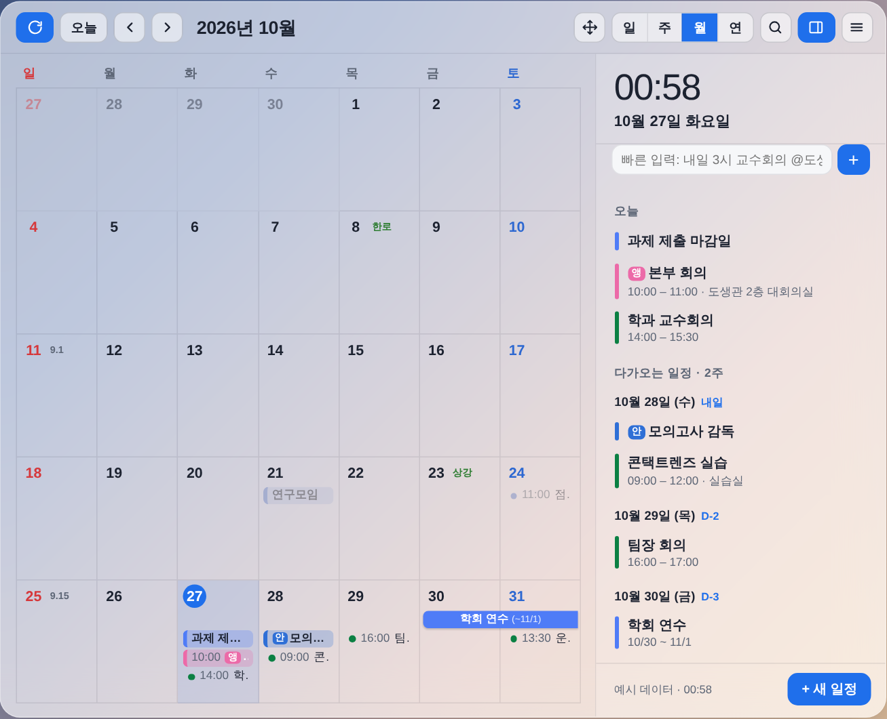

내 구글 캘린더를
바탕화면에 그대로
바탕화면 달력은 내 구글 캘린더 일정을 Windows 바탕화면에 항상 보여 주는 달력 앱입니다. 다른 프로그램 창을 가리지 않고 바탕화면에 붙어 있으며, 일정을 보고 바로 추가·수정할 수 있습니다.

주요 기능
바탕화면에 고정
항상 다른 창 아래에 있어 작업을 방해하지 않고, Win+D로 바탕화면을 볼 때도 그대로 보입니다.
구글 캘린더 양방향 동기화
구글 캘린더의 일정을 보여 주고, 앱에서 추가·수정·삭제한 일정이 휴대폰 구글 캘린더에도 바로 반영됩니다.
반복 일정·기간 지정
매주·매달 말일 등 반복 일정을 만들고, 반복 기간과 범위(이 일정만 / 이후 모두 / 전체)를 정할 수 있습니다.
분류·색·강조
업무·개인 등 분류별 약칭과 색을 정하고, 중요한 일정은 반짝이게 강조합니다.
공유 캘린더
가족·동료와 함께 쓸 캘린더를 만들고 구글 계정 이메일로 초대할 수 있습니다.
구글 할 일·음력·공휴일
구글 할 일 목록, 음력 날짜, 한국 공휴일과 대체공휴일, 날씨를 함께 보여 줍니다.
구글 계정에서 사용하는 정보
바탕화면 달력은 사용자가 구글 계정으로 로그인하고 권한을 허용한 경우에만 아래 정보에 접근합니다. 앱은 구글 서버와 직접 통신하며, 개발자의 서버로 사용자의 구글 데이터를 보내거나 저장하지 않습니다.
| 권한 | 사용하는 곳 |
|---|---|
이메일 주소 (openid, email) | 로그인한 계정을 화면에 표시하고 구분합니다. |
구글 캘린더 (…/auth/calendar) | 캘린더 목록과 일정을 달력에 표시하고, 사용자가 요청할 때 일정 추가·수정·삭제, 반복 일정 변경, 공유 캘린더 만들기와 멤버 초대를 합니다. |
구글 할 일 (…/auth/tasks) | 할 일 목록을 달력에 표시하고, 사용자가 요청할 때 할 일을 추가·완료·삭제합니다. |
구글 드라이브 – 앱이 만든 파일만 (…/auth/drive.file) | 사용자가 일정에 첨부한 사진을 사용자의 드라이브 "바탕화면 달력 첨부사진" 폴더에 저장하고 보여 줍니다. 앱이 만들지 않은 드라이브 파일에는 접근하지 않습니다. |
구글 드라이브 – 앱 설정 공간 (…/auth/drive.appdata) | 분류·색, 학기 주차, 스티커 등 앱 설정을 사용자 드라이브의 숨겨진 앱 전용 공간에 저장해 다른 PC에서도 같은 설정을 쓰게 합니다. |
자세한 내용은 개인정보처리방침을 확인하세요.
ENDesktop Calendar
Desktop Calendar (Korean name: 바탕화면 달력) is a Windows desktop app that shows your Google Calendar on the desktop, always behind other windows, so you can see and edit your schedule at a glance.
- Google Calendar (
calendar): display your calendars and events; create, edit and delete events, change recurring events, create a shared calendar and invite members — only when you request it. - Google Tasks (
tasks): show your tasks on the calendar and add, complete or delete tasks when you request it. - Google Drive – files created by the app (
drive.file): store photos you attach to events in a "바탕화면 달력 첨부사진" folder in your Drive. - Google Drive – app data folder (
drive.appdata): keep your app settings (categories, colors, semester weeks) in the hidden app folder so they follow you to other PCs. - Email (
openid,email): show which account is signed in.
The app talks directly to Google APIs from your PC. Your Google user data is never sent to or stored on the developer's servers, never sold, and never used for advertising or AI model training.
Read the full Privacy Policy.